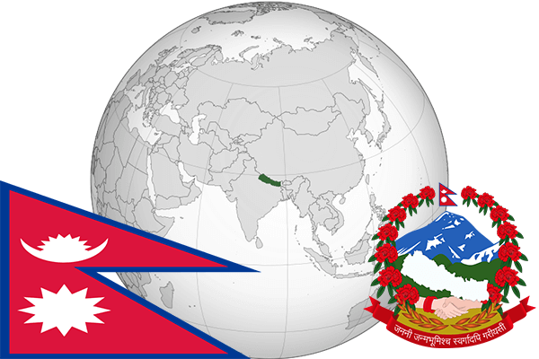

To`liq nomi: Nepal Qirolligi
Region: Janubiy Osiyo
Qonunchilik shakli: Prezidentlik respublika
Mustaqillik kuni: 21-dekabr 1768-yil
Poytaxt: Katmandu
Maydoni: 140,800 km²
Chegaradosh davlatlari: Xitoy, Butan, Bangladesh, Hindiston
Aholisi: 28,982,771 (2016-yil)
Aholi zichligi: 180/km2
Aholining o`rtacha yoshi: 69,9 yil (2015-yil)
Rasmiy tili: Nepal tili
Dini: Hinduizm
Pul birligi: Nepal rupisi
Telefon prefiksi: +977
Internet domen: .np
Xalqaro tashkilotlarga a`zoligi: BMT (1955-yil)
Dengiz va okeanlarga chiqishi: Yo’q
YIM: Butun: $24.067 mil.(2016-yil) Jon boshiga: $837
Yirik shaharlari: Katmandu, Pokhara, Lalitpur